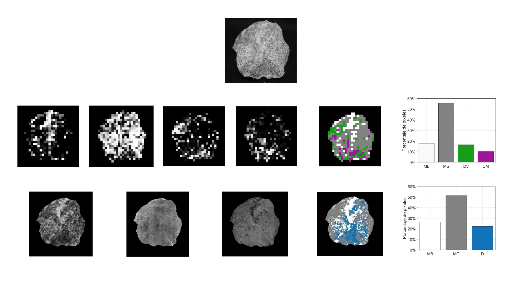
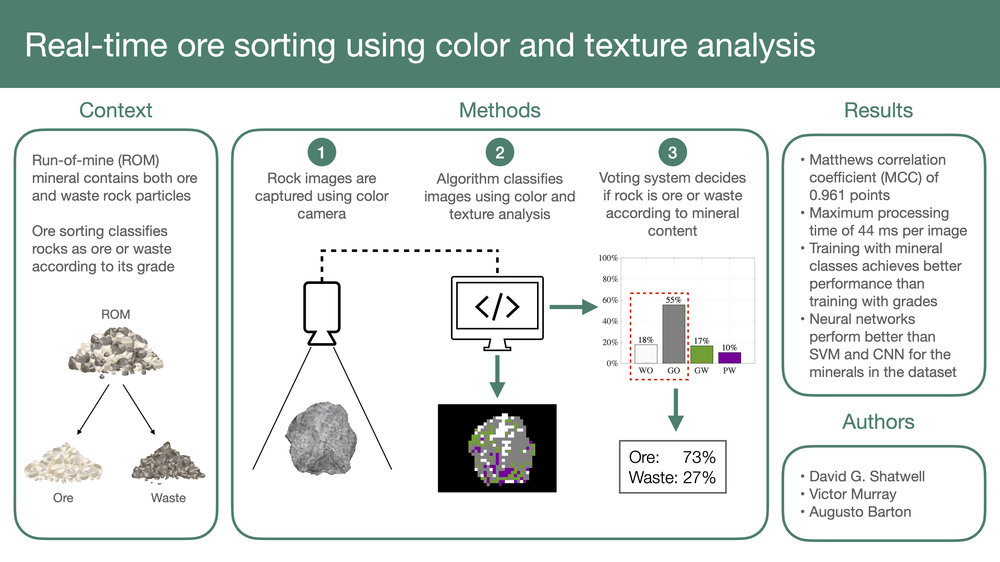
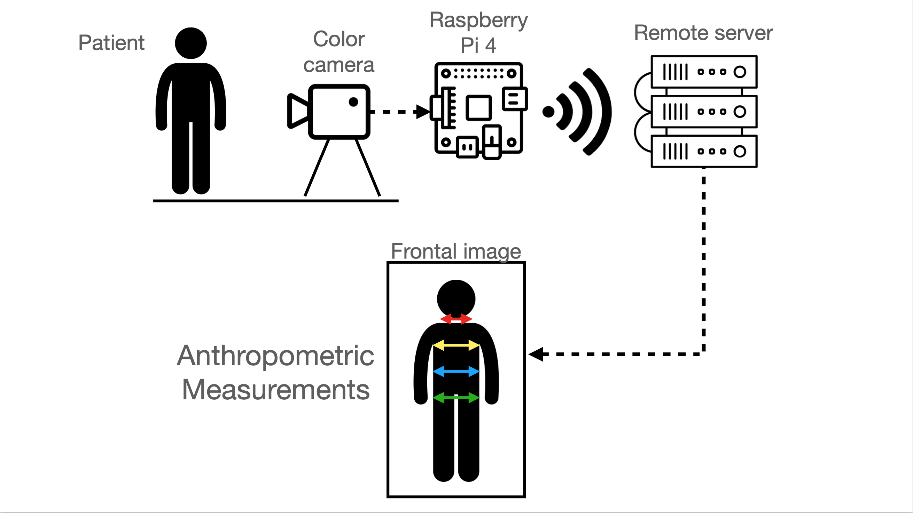
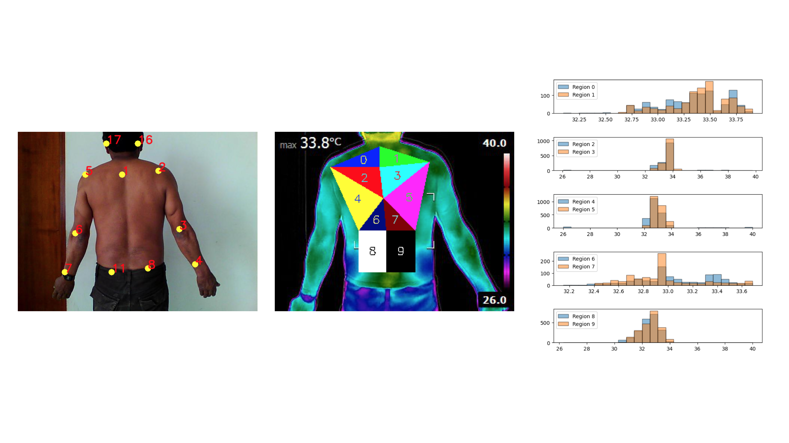
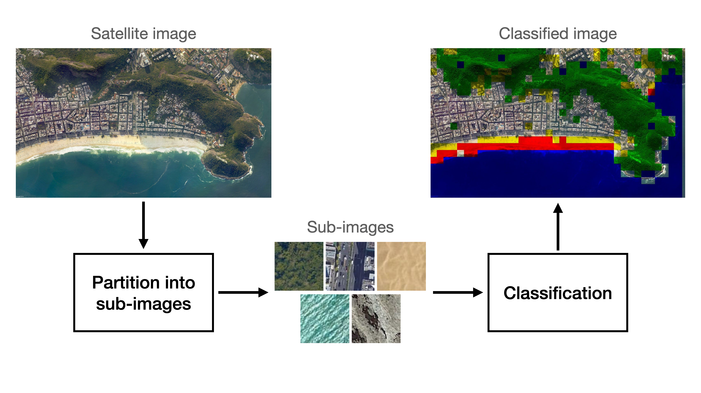
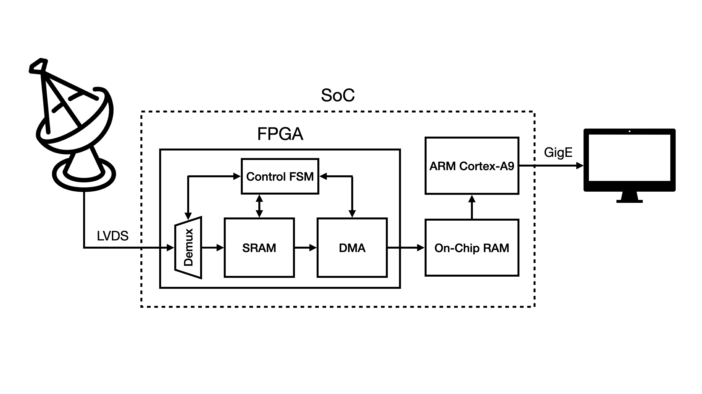

David Shatwell
Researcher at Hochschild Mining
R&D Department
Email: dshatwell23@gmail.com
Research interests: Computer Vision, Machine Learning
Bio
I am a researcher in the R&D department at Hochschild Mining, a gold and silver mining company operating in Peru. I am currently responsible for the Ore Sorting Research Lab, where we are developing new mineral classification algorithms using computer vision and machine learning. Previously, I did an internship in the R&D department at the Jicamarca Radio Observatory, where I worked with FPGAs and microprocessors under the supervision of Joaquin Verastegui and John Rojas. I have also worked as a computer vision consultant in occupational health clinic Work & Health, where I developed projects using pose estimation and thermal imaging.
I got my undergraduate degree from University of Engineering and Technology - UTEC in Electrical Engineering, where I took elective courses on Image Processing, Machine Learning and Communications Engineering. Under the supervision of Victor Murray, I wrote my honors thesis on mineral classification using color and texture features of digital images. My thesis achieved the highest possible grade and won second place in the undergraduate thesis competition organized by UTEC. During my studies, I also worked as TA of the Digital Circuits Lab, designing, supervising, and grading lab projects with FPGAs.
| University of Engineering and Technology - UTEC 2015-2020 |
Jicamarca Radio Observatory Winter 2019 |
Work & Health 2020-2021 |
Hochschild Mining 2019-Present |
Projects
Control Software for Color and 3D Profiling Cameras
David Shatwell, Hugo Negreyros
Line-scan cameras are cameras that, unlike area-scan cameras, acquire a single row instead of a full 2D image. This type of cameras has several advantages over the traditional area-scan technology. In particular, they can capture images of objects moving at very high speeds with very little motion blur. In order to form 2D images, line-scan cameras are usually used on applications where a conveyor belt moves objects at a constant speed. In this project, we implemented a program used to synchronize and control two cameras at the same time. The first camera is a color camera (Teledyne Dalsa Spyder 3 GigE), while the second one is a 3D profiling camera (Automation Technology C2-2040 GigE), both of which are controlled using Gigabit Ethernet. We use the cameras to acquire color images, height profiles, and laser reflection/dispersion images, which are useful for identifying material properties in sorting applications.
Ore Sorting using Color and Hyperspectral Imaging
David Shatwell, Victor Murray, Augusto Barton
Sensor-based ore sorting is a technology used to classify mineralized and waste rocks with the goal of reducing operating costs. In the past, several classification algorithms using color or hyperspectral images have been proposed, but few of them use both types of images in order to achieve a higher classification performance. This paper presents a new algorithm that combines the best color, texture, and hyperspectral features in a fully autonomous way using machine learning. The proposed algorithm was tested with rock particles extracted from an underground mine located in the peruvian Andes. All images were manually classified by an expert geologist and then were analyzed in a chemical laboratory in order to estimate their gold and silver grade. The results achieved with the proposed method were very promising, with a Matthews' correlation coefficient (MCC) of 0.9787 and a potential increase in recovery of 1.4% compared to other commercial ore sorting solutions. This paper was selected as one of 25 finalists in the Technological Innovation category of the National Mining Contest. The results of the paper will be presented in the PERUMIN 35 conference on September 28, 2022.
Ore Sorting using Color and Texture Features
David Shatwell, Victor Murray, Augusto Barton
Sensor-based ore sorting is a technology used to classify high-grade mineralized rocks from low-grade waste rocks to reduce operation costs. Many ore sorting algorithms using color images have been proposed in the past, but few validate their results using mineral grades or optimize the algorithms to classify rocks in real-time. This paper presents an ore sorting algorithm based on image processing and machine learning that is able to classify rocks from a gold and silver mine based on their grade. The algorithm is composed of four main stages: (i) image segmentation and partition into sub-images, (ii) feature extraction us- ing color statistics, principal component analysis, and wavelet texture analysis, (iii) sub-image classification using neural networks, and (iv) a voting system to determine the overall class of the rock. The algorithm was trained using rocks that a geologist manually classified according to their mineral content and rocks analyzed in a geochemical laboratory to determine their gold and silver grades. The proposed method was compared with other commonly used classification algorithms such as convolutional neural networks and support vector machines. The results produced a Matthews correlation coefficient of 0.961 points and a processing time under 44 ms, promising for real-time ore sorting applications. This paper has been presented to the International Journal of Mining Science and Technology and is currently being peer reviewed.
Anthropometric Measurement Estimation using OpenPose Algorithm
David Shatwell
In occupational health clinics, doctors perform medical triage by measuring the vital signs of patients, as well as their anthropometric measurements, such as height and the circunference of the neck, thorax, abdomen and waist. This process is time consuming and can be automated to reduce patient waiting times. In this project, we propose an anthropometric measurement estimation algorithm using the OpenPose model developed by CMU Perceptual Computing Lab. The algorithm estimates the neck, thorax, abdomen and waist measurement projections of male patients using single frontal images. Future work will focus on developing regression models to estimate the circunference of the selected areas based on the frontal projections.
Temperature Analysis on Different Parts of the Back of Patients Using Thermal Imaging and Pose Estimation
David Shatwell
This project, developed in partnership with a peruvian occupational health clinic, consists of an algorithm that computes temperature statistics of 10 different parts of the back of patients using thermal images and the OpenPose model, developed by the CMU Perceptual Computing Lab. The algorithm has three main stages. The first stage uses a color (RGB) image to find the location of several body parts of the patient. This keypoints are then used to define the 10 regions. Finally, we compute temperature statistics from each region. The proposed method could potentially be used by a health professional in the future to find lessions in the backs of patients.
Classification of Satellite Images based on their Class of Terrain
David Shatwell, Alejandro Weston
Satellite image classification and analysis has many important applications in the real world, such as tracking deforestation and desertification levels, glacier movement, and even urban expansion. In this paper, we propose a satellite image analysis algorithm based on sub-image classification. The proposed algorithm can identify up to five different classes of terrain: city, sand, vegetation, mountain and water. In order to find the best possible image analysis algorithm, we trained and compared the classification performance of four common machine learning algorithms that require manual feature extraction and one deep learning algorithm with automatic feature extraction. All sub-images used to train and test the models were acquired from Google Earth at different heights. The models were tested using sub-images that come from the same images as the training set and also with sub-images that come from other images not used for training. After evaluating the performance of all models, the best one was selected for the task of satellite image analysis.
Data Transmission Through Gigabit Ethernet from a LVDS Interface Using a System On Chip (Single Board Computer + FPGA)
David Shatwell, Joaquin Verastegui, John Rojas
The objective of this project was to design and implement a system capable of transmitting data at high speeds from the JARS 2.0 radar to a remote computer through Gigabit Ethernet using a system on chip (SoC). The system has two main stages: (i) data acquisition from the LVDS interface and (ii) data transmission to the computer through a communication protocol. In order to acquire data from the LVDS interface, the FPGA was used to implement a system capable of multiplexing and copying the data to a memory shared with the processor. Then, a program running on the processor was used to read the data from the shared memory and send it to the PC with the UDP protocol.
2-DOF PID Control of the Angular Position of an Industrial Plant Emulator
David Shatwell, Frank Salazar, Arturo Rojas-Moreno,

This paper employs a 2–DOF (2 Degrees of Freedom) PID (Proportional Integral Derivative) controller to control the angular position of the rotational load of an industrial plant emulator. The plant consists of a DC servo motor that is connected to a speed reducer with backlash, which in turn is connected to a rotational load through an elastic belt. The performance of the 2–DOF PID control system is compared with the performance of a PID control system. Experimental results demonstrate that the former control system performs better in the presence of multiple disturbances such as backlash, friction and vibration by decreasing the magnitude of the oscillations in the steady state.